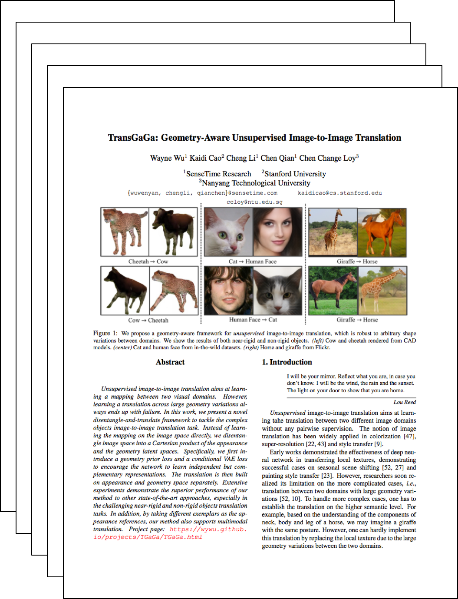

TransGaGa: Geometry-Aware Unsupervised Image-to-Image Translation
|
SenseTime Research
|
Stanford University
|
Nanyang Technological University
|
Unsupervised image-to-image translation aims at learning a mapping between two visual domains. However, learning a translation across large geometry variations always ends up with failure. In this work, we present a novel disentangle-and-translate framework to tackle the complex objects image-to-image translation task. Instead of learning the mapping on the image space directly, we disentangle image space into a Cartesian product of the appearance and the geometry latent spaces. Specifically, we first introduce a geometry prior loss and a conditional VAE loss to encourage the network to learn independent but complementary representations. The translation is then built on appearance and geometry space separately. Extensive experiments demonstrate the superior performance of our method to other state-of-the-art approaches, especially in the challenging near-rigid and non-rigid objects translation tasks. In addition, by taking different exemplars as the appearance references, our method also supports multimodal translation.
Paper
|  |
TransGaGa: Geometry-Aware Unsupervised Image-to-Image Translation
Wayne Wu, Kaidi Cao, Cheng Li, Chen Qian, Chen Change Loy
To Appear in Computer Vision and Pattern Recognition, CVPR 2019.
|
Acknowledgements
We would like to thank Kwan-Yee Lin and Jingtan Piao for insightful discussion and their exceptional support..
|
{kind=link}